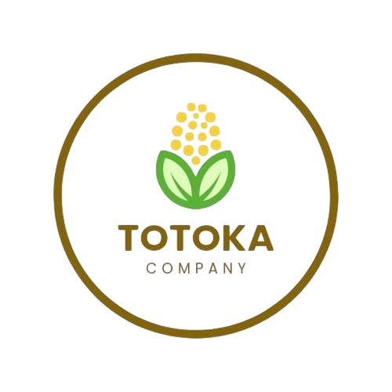

Sostenibilidad
Aprovechamos recursos para reducir el impacto ambiental.

TOTOKACompanyNosotros
En TOTOKA convertimos residuos agrícolas y plásticos reciclados en materiales de alto valor, ofreciendo soluciones sostenibles que contribuyen a un futuro más limpio y responsable.

Aprovechamos recursos para reducir el impacto ambiental.
Desarrollamos materiales con propiedades únicas y de alto desempeño.
Promovemos la reutilización de residuos en cada etapa de nuestro proceso.
Trabajamos por un futuro más sostenible para todos y todas.
TOTOKA COMPANY es una empresa mexicana dedicada al desarrollo de materiales sustentables para la construcción y recubrimientos, elaborados a partir de residuos agrícolas y polímeros reciclados.
Nuestro objetivo es crear productos funcionales y accesibles que contribuyan al cuidado del medio ambiente y al desarrollo regional.
Conoce nuestro proyectoDetectamos el alto volumen de residuos agrícolas y plásticos que afectan al medio ambiente y a las comunidades.
Iniciamos la búsqueda de soluciones sostenibles mediante el aprovechamiento de estos residuos.
Desarrollamos formulaciones innovadoras que cumplen con estándares de calidad y sostenibilidad.
Implementamos procesos responsables y eficientes para llevar nuestros productos al mercado.
Seguimos expandiendo nuestro impacto ambiental positivo y fortaleciendo el desarrollo regional.
Creamos soluciones que cuidan el planeta y promueven un futuro más limpio.
Buscamos nuevas formas de transformar residuos en materiales de alto valor.
Actuamos con conciencia y compromiso en cada decisión que tomamos.
Reutilizamos materiales para reducir, renovar y regenerar.
Impulsamos el crecimiento de nuestras comunidades y el talento local.
Creemos que cada elección consciente hoy, construye un mejor mañana.